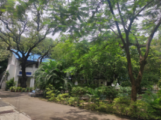
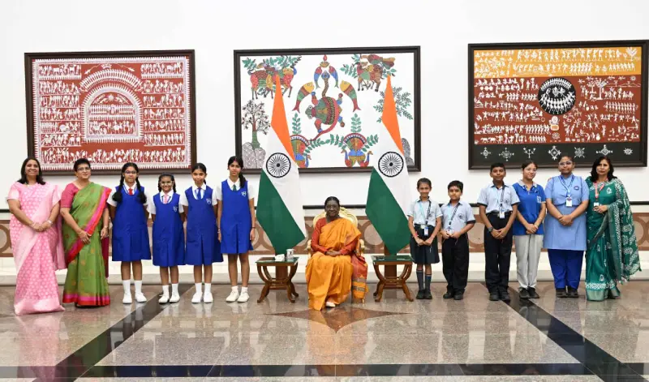
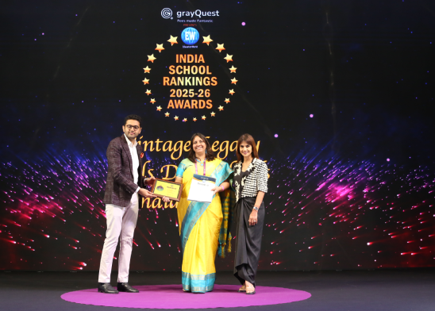
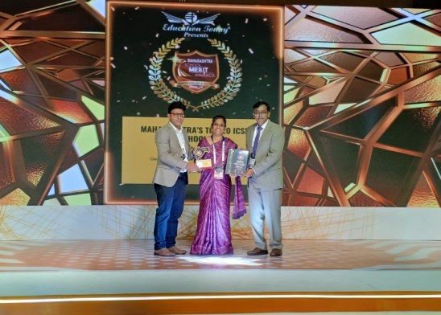
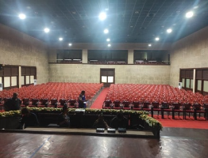
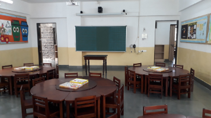
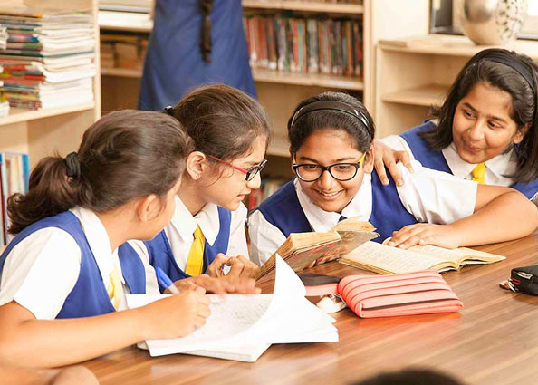
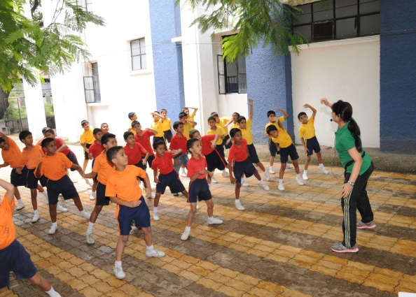

Camp, Pune · 5B, General Bhagat MargUDISE 27251401406info@smspune.com · +91 8956196711
160th Anniversary Special Edition
The Marian Gazette
The independent journal of St. Mary's School, Pune
Vol. CLX · No. 1Wednesday, 9 September 2026Established 5 November 1866
Founded 1866 · Still printing the lesson
One Hundred and Sixty Years
From a day school for girls in Poona to a national institution of learning: St. Mary's School, Pune, marks a century and three-score years of scholarship, character and service.
On the fifth of November, 1866, Archdeacon Leigh Lye and Judge Lloyd issued a circular to the residents of Poona. A day school for girls was desired; an appeal for five hundred rupees was made; a headmistress, Mrs Woods, was engaged. From that modest beginning grew St. Mary's School — an Anglo-Indian, unaided minority institution whose Christian principles remain its foundation, and whose doors stand open to children of all communities.
One hundred and sixty years later the campus still occupies its verdant Cantonment acres on General Bhagat Marg. The girls' section, the boys' section and the co-educational junior college share the same grounds. The Sisters of the Community of St. Mary the Virgin, Wantage, who took charge in 1878, left in 1977; the tradition they planted — academic seriousness, courtesy, and a child-centred classroom — has not.
This anniversary issue records the news of the present year as it would have been set in type: a visit to Rashtrapati Bhavan; a clean sweep of the ICSE and ISC examinations; a hat-trick of Education World rankings; and the Best All-Rounder School Award from Bangkok. The facts are the school's own. The paper is new.

The Cantonment acres. St. Mary's is a day school in serene, verdant surroundings in Camp, Pune, with separate sections for girls, boys and a co-educational junior college.
New Delhi
A memorable visit to Rashtrapati Bhavan

Raksha Bandhan at Raisina Hill. The school team with the Hon'ble President of India, Smt. Droupadi Murmu.
St Mary's School, Pune, was deeply honoured to meet the Hon'ble President of India, Smt. Droupadi Murmu, at Rashtrapati Bhavan, New Delhi, on the auspicious occasion of Raksha Bandhan.
The team had the privilege of interacting with the Hon'ble President and sharing this truly memorable moment with her. In her interaction with the children, the President encouraged them to grow into responsible and compassionate citizens, emphasising the importance of contributing positively to society and caring for our environment.
The visit was an inspiring and enriching experience for our students, leaving them with cherished memories.
Board examinations
Congratulations: a 100 per cent pass
St. Mary's School, Pune proudly announces an outstanding academic achievement in the ICSE (Class X) and ISC (Class XII) Board Examinations this year, with a 100% pass result across both levels.
In the ICSE (Class X) examination, Hibba Shaikh secured the top position with an exceptional 99.4%. Out of 203 girls and boys, 66 students secured above 95% in English and the best of 4 subjects, and 135 secured above 90%.
The ISC (Class XII) results were equally commendable. Vedashree Divekar topped Humanities with 97.8%, Gayatri Anand Kumbhojkar came second with 97.5%, Isha Goyal led Commerce with 97.3%, and Vanshika Srivastava emerged as the Science stream topper with 96%. Of 97 candidates, 12 secured above 95% and 39 above 90%.
Principal Ms Caroline Diane Ross said such consistent excellence reflects the school's holistic approach — nurturing not only academic success but also discipline, character, and a spirit of service.
St Mary's School, Pune was awarded the Best All-Rounder School Award at the World School Summit, 2025 held in Bangkok in July 2025.
Education World

India No. 1 — a hat-trick
Congratulations to all our stakeholders. St Mary's School is ranked India #1, Maharashtra #1 and Pune #1 at the Education World India School Rankings Awards 2025 in the Vintage Legacy Girls Day School category for the 3rd consecutive year.
Education Today

Top ICSE school in Pune
St Mary's School is ranked #1 in Pune and #2 in Maharashtra among Maharashtra's Top ICSE schools at the Education Today Maharashtra School Merit Awards 2025.
7National toppers, ICSE
4National toppers, ISC
90%Merit list with 90% and above, ICSE
90%Merit list with 90% marks, ISC
A green campus in Camp
Photographs from the school grounds

The auditoriumThe swimming poolBasketball court

Prep classroomFootball ground

School life
Experience the joy of learning
St. Mary's has several major strengths: a solid academic programme, a child-centred approach and an unbeatable ambience. Teaching usually extends beyond the classroom, with active involvement and participation of every child in various activities and events. The school has developed its own programme to ensure a holistic balance between academics, creativity and physical activity.

The staff
Dedicated and enthusiastic faculty
A blend of the traditional and the contemporary. Faculty members are experienced educators who foster deep conceptual understanding, critical thinking, and intellectual curiosity in every learner. The results at the ICSE and ISC examinations have always been excellent due to the combined efforts of a strong team of extremely competent and dedicated teachers.
From the mission
Core values
Committing ourselves to academics and inclusive development, where every child learns to work hard in an environment of positivity and encouragement.
Constantly providing opportunities and motivating children irrespective of differences and abilities.
Developing thinking skills by inculcating creativity, enquiry and introspection.
Bringing out the best in every child, enabling him/her to make the world a better place, by being true to self and God.
Wanted: new Marian
For Admissions 2026–27
Nursery applications, junior college and the IB Diploma Programme. Seats are limited.